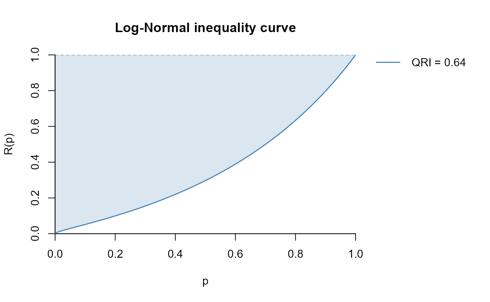
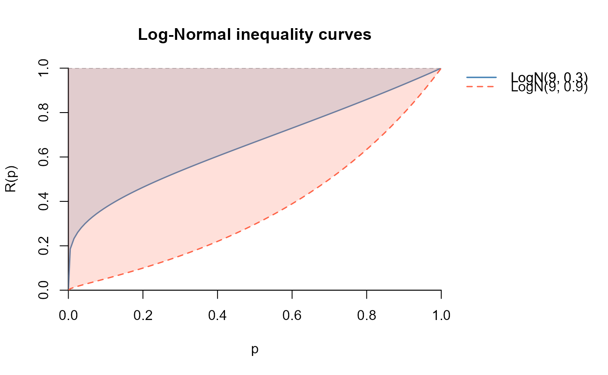
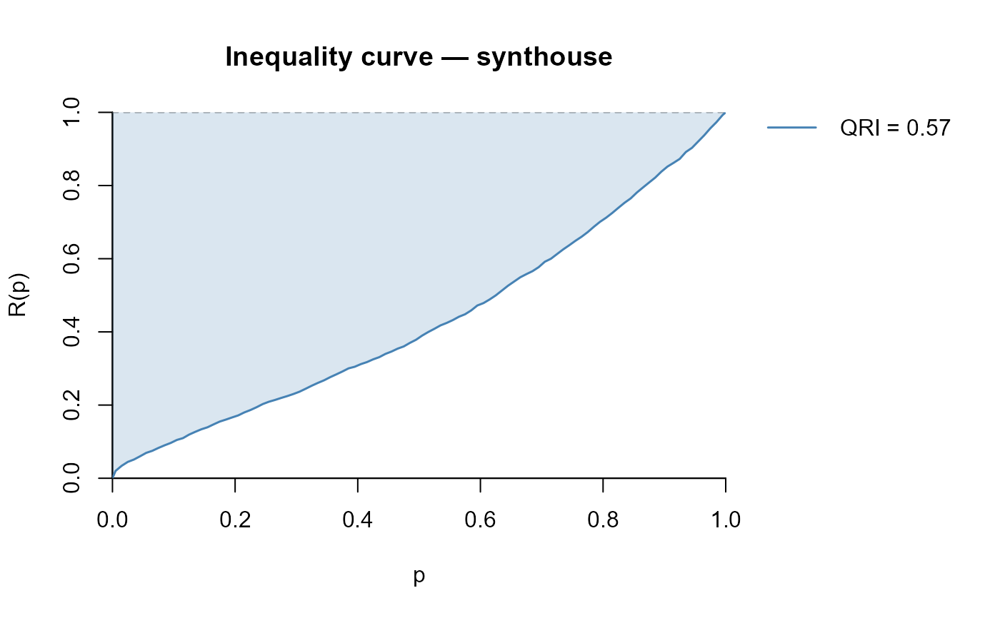

Plots the inequality curve \(R(p) = Q(p/2) / Q(1 - p/2)\) over \(p \in [0, 1]\), from either sampling survey data or a parametric distribution. The shaded area between the curve and the line \(R(p) = 1\) equals the QRI.
Usage
plot_inequality_curve(
y = NULL,
qfunction = NULL,
qfun_args = list(),
weights = NULL,
M = 200,
type = 6,
na.rm = TRUE,
shade = TRUE,
add = FALSE,
col = "steelblue",
shade_col = NULL,
lwd = 1.5,
lty = 1,
legend_qri = TRUE,
label = NULL,
xlab = "p",
ylab = "R(p)",
main = "Inequality curve"
)Arguments
- y
Numeric vector of strictly positive values (e.g. income). Provide either
y(empirical mode) orqfunction(parametric mode), not both.- qfunction
A parametric quantile function, e.g.
qlnorm,qweibull. Provide eitherqfunctionory, not both.- qfun_args
Named list of additional arguments passed to
qfunction(e.g. ifqfunction==qlnorm, then providelist(meanlog = 9, sdlog = 0.6)).- weights
Numeric vector of sampling weights. Only used in estimation mode. If
NULL, all observations are equally weighted.- M
Integer; number of grid points for evaluating \(R(p)\) (default:
200).- type
Quantile estimation type (integer 4–9 or
"HD"). Only used in empirical mode. Default:6.- na.rm
Logical; remove missing values? Default:
TRUE.- shade
Logical; if
TRUE(default), shades the area between \(R(p)\) and the equality line \(R(p) = 1\). The shaded area equals the QRI.- add
Logical; if
TRUE, adds the curve to an existing plot without redrawing axes. Each successive call appends a new entry to the legend on the right of the plot.- col
Colour of the inequality curve (default:
"steelblue").- shade_col
Colour for the shaded area. Defaults to a transparent version of
col.- lwd
Line width (default:
1.5).- lty
Line type (default:
1).- legend_qri
Logical; if
TRUE(default), maintains a legend outside the plot area on the right, showing the QRI for each curve. Whenadd = TRUEthe new curve is appended below the previous entries.- label
Character string; overrides the auto-generated legend label (
"QRI = X.XXXX"). Useful for giving curves descriptive names. Default:NULL(auto-label).- xlab
x-axis label (default:
"p").- ylab
y-axis label (default:
"R(p)").- main
Plot title (default:
"Inequality curve").
Value
Beyond the plot, a named list with three elements:
- p
Numeric vector of grid points in \([0, 1]\).
- Rp
Numeric vector of \(R(p)\) values at each grid point.
- qri
The estimated QRI (area between the equality line and the curve).
The list is returned invisibly, meaning it is not printed to the console
when the function is called without assignment. Assign the output to a
variable (e.g. out <- plot_inequality_curve(...)) to inspect it.
Details
The inequality curve \(R(p)\) plots the ratio of symmetric quantiles around the median: $$R(p) = \frac{Q(p/2)}{Q(1 - p/2)}, \quad p \in [0, 1]$$, against \(p\). For a perfectly equal distribution \(R(p) = 1\) for all \(p\), and the curve coincides with the horizontal line at 1. The further the curve lies below the equality line, the more unequal the distribution. The QRI is the area between the equality line and the curve.
Boundary values \(R(0) = 0\) and \(R(1) = 1\) are set by convention (see Prendergast and Staudte (2018) ).
Multiple curves can be overlaid by calling the function repeatedly with
add = TRUE. The legend outside the plot accumulates an entry for
each curve automatically.
References
Prendergast LA, Staudte RG (2018). “A simple and effective inequality measure.” The American Statistician, 72, 328–343.
Scarpa S, Ferrante MR, Sperlich S (2025). “Inference for the quantile ratio inequality index in the context of survey data.” Journal of Survey Statistics and Methodology. doi:10.1093/jssam/smaf024 .
See also
qri for the sample-based QRI estimator,
superpop_qri for the theoretical QRI of a parametric
distribution.
Other inequality indicators based on quantiles:
inequantiles(),
palma_ratio(),
qri(),
qsr(),
ratio_quantiles()
Examples
# -----------------------------------------------------------------
# Parametric mode: single curve
# -----------------------------------------------------------------
plot_inequality_curve(
qfunction = qlnorm,
qfun_args = list(meanlog = 9, sdlog = 0.9),
main = "Log-Normal inequality curve"
)

# -----------------------------------------------------------------
# Overlay multiple curves — legend accumulates automatically
# -----------------------------------------------------------------
plot_inequality_curve(
qfunction = qlnorm,
qfun_args = list(meanlog = 9, sdlog = 0.3),
main = "Log-Normal inequality curves",
col = "steelblue",
label = "LogN(9, 0.3)"
)
plot_inequality_curve(
qfunction = qlnorm,
qfun_args = list(meanlog = 9, sdlog = 0.9),
col = "tomato", lty = 2, add = TRUE,
label = "LogN(9, 0.9)"
)

# -----------------------------------------------------------------
# Empirical mode: survey data with sampling weights
# -----------------------------------------------------------------
data(synthouse)
out <- plot_inequality_curve(
y = synthouse$eq_income,
weights = synthouse$weight,
main = "Inequality curve — synthouse"
)

# Inspect the returned list
out$qri # estimated QRI
#> [1] 0.57
head(out$p) # grid points
#> [1] 0.0000 0.0025 0.0075 0.0125 0.0175 0.0225
head(out$Rp) # R(p) values
#> 0.125% 0.375% 0.625% 0.875% 1.125%
#> 0.00000000 0.01523521 0.02547892 0.03099074 0.03567123 0.04309195